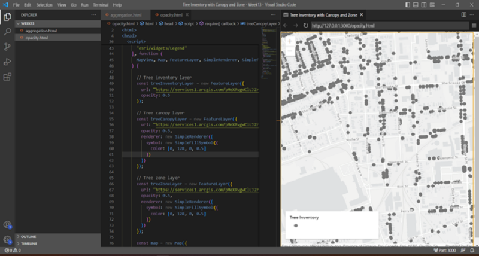

Visualization through code

ArcGIS Map SDK for JavaScript is a powerful tool for creating data visualizations that leverage location-based data. It provides developers with a range of capabilities and tools to create dynamic, interactive maps and web applications. With a wealth of features and customization options, the SDK can be used to build applications for a range of industries and use cases, from logistics and transportation to environmental and social analysis. Whether you are a seasoned developer or a newcomer to the field, the ArcGIS Map SDK for JavaScript can help you create engaging and informative data visualizations that help you better understand and communicate spatial information.